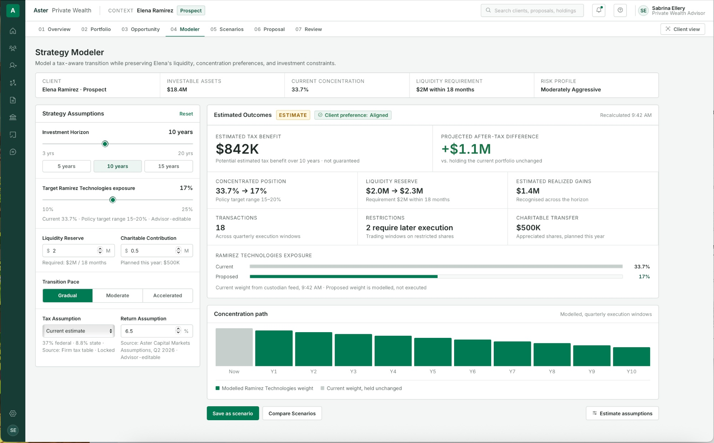
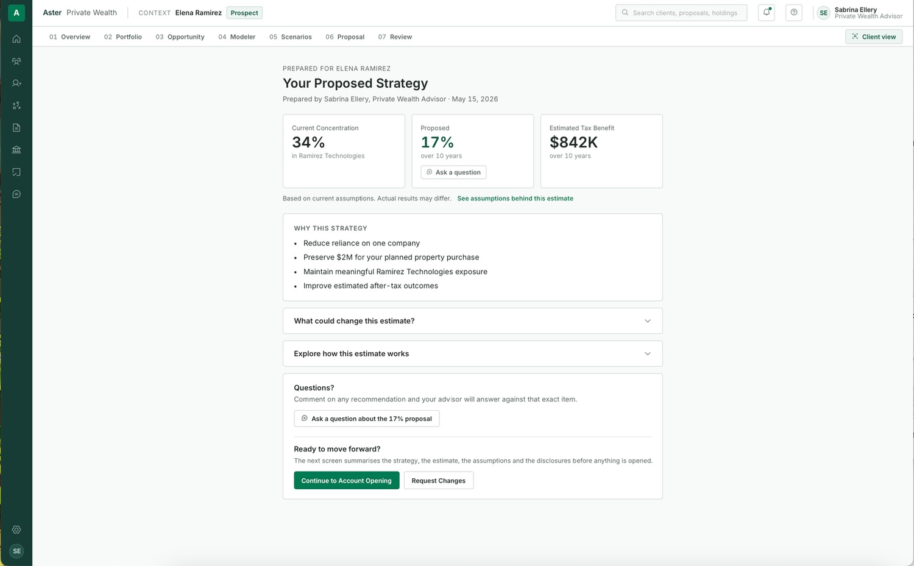
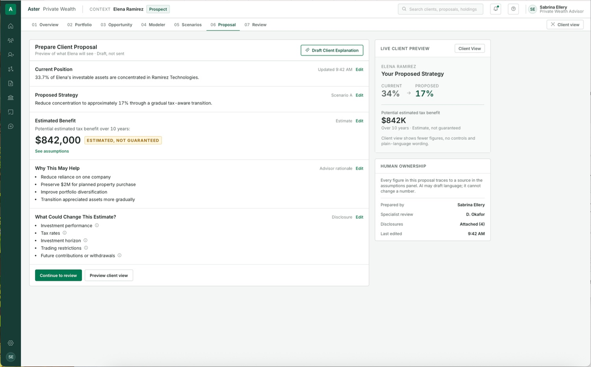
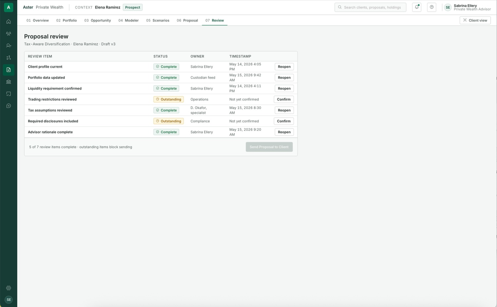
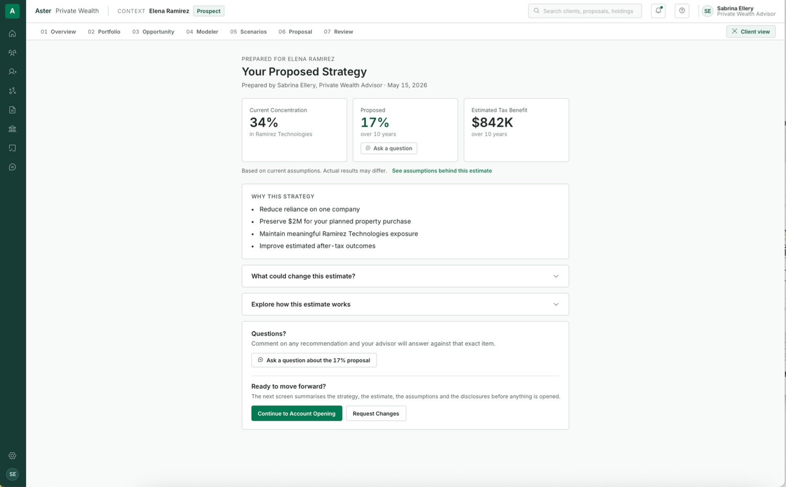
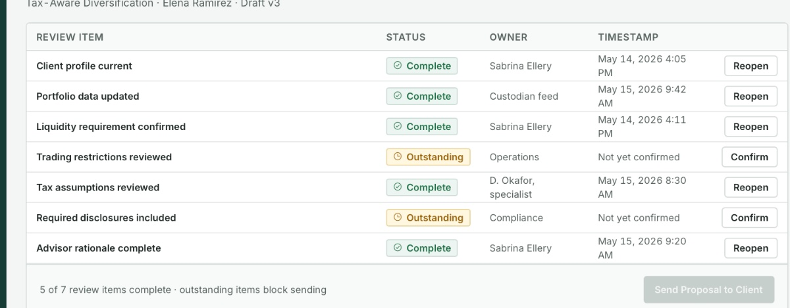
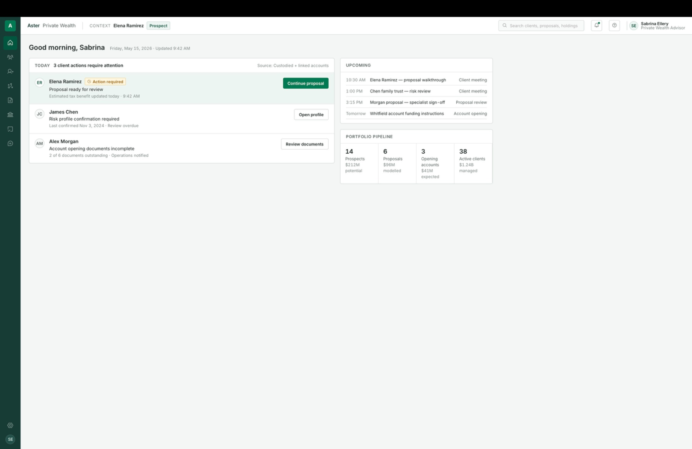

From complex portfolio models to clear client decisions.


I kept having to work backward from financial terms and recommendations just to understand what was actually being proposed. The strategies themselves were not the hard part. Following how portfolio information turned into a recommendation, and eventually into a decision she had to make, was.
That became the question behind Aster: how could the workflow make that reasoning easier to follow without stripping away the financial detail the advisor still needs?
Understands the client, explores strategies, works with specialists, and owns the recommendation.
Provides goals and constraints, asks questions, and decides whether to move forward.
Provides deeper portfolio and strategy expertise.
Handles restrictions, funding, execution requirements, and account logistics.
Reviews disclosures, policy requirements, and supervision.
This made the advisor my primary user, while the other four roles shaped what the advisor needed to see and when.
I mapped the relationship from prospecting through account opening to see where the recommendation actually sits. The advisor carries the same client information through every stage even though the task changes, which pushed me away from a set of disconnected pages and toward one connected flow. I focused Aster on the three stages above.
I used those conversations to pressure test a few assumptions about how high stakes financial work handles information, review, and AI.
These ideas helped me sharpen several interaction decisions in Aster, but I did not use the interviews as validation of private wealth workflows.
The advisor needs enough detail to build and defend a recommendation. The client needs enough to understand what is changing, why, and what could affect the estimate.
I organized Aster around the main stages of the recommendation instead of around separate tools.
The same client information moves through all nine stages instead of being re-entered at each one.
Tasks, messages, and review stay attached to the client or financial object they concern, so the reasoning behind a recommendation is still available later.
The advisor and the client read the same approved proposal at two different levels of detail, rather than two separate documents.
The Modeler is where I spent the most time. If an advisor shortens the investment horizon and the projected benefit falls from $842K to $417K, updating the number is not enough on its own.
I added a "Why did this change?" state so the advisor can connect the new result back to the assumption that caused it. Sources, timestamps, and whether a value is advisor editable or firm controlled all stay in the same workspace.
I first thought about the model mostly in terms of financial outcomes. But Elena's preferences and liquidity needs can make a stronger looking number a worse fit.
When the advisor models a 10% allocation to Ramirez Technologies, Aster surfaces that Elena previously said she wanted to keep at least 15%.
I originally treated preferences like something to check during review. That felt too late, so I moved the warning into the Modeler, where the allocation is actually being changed. The advisor can keep exploring, and the conflict and its source stay visible.
Elena indicated she wants to retain at least 15% exposure.
The comparison view keeps tax benefit, concentration, realized gains, liquidity, transactions, restrictions, and client preference alignment together, so the advisor is weighing the full tradeoff instead of picking whichever scenario shows the largest projected benefit.
| Comparison | Gradual transition | Accelerated diversification |
|---|---|---|
| Estimated tax benefit | $842K | $1.06M |
| Company concentration | 33.7% → 17% | 33.7% → 9% |
| Realized gains | $1.4M | $3.2M |
| Liquidity | $2.0M → $2.3M | $2.0M → $4.1M |
| Transactions | 18 | 41 |
| Trading restrictions | 2 require later execution | 7 require later execution |
| Client preference alignment | Aligned | Below stated floor |
The advisor view carries the assumptions, sources, rationale, review status, and controls needed to build the proposal. I did not think Elena needed all of that at once.

The deeper assumptions are still there if the client wants to open them. "See assumptions behind this estimate" and "What could change this estimate?" both expand in place.
The people I spoke with described spending real time turning finished analysis into presentation material. That convinced me to build the explanation into the workflow instead of leaving it as a separate document, so Prepare Client Proposal, the draft, advisor review, and the client preview all sit on one screen.
I was comfortable using AI to draft a client friendly explanation from information already approved in the proposal. I was not comfortable letting it choose the strategy or make the recommendation.
The draft shows the information it used, and the advisor can edit, accept, or discard it before anything reaches Elena.



I wanted the product to show what still had to happen before a recommendation could move forward. The Review screen lists each check with an owner and a timestamp, so the advisor can see that Operations has not confirmed trading restrictions and Compliance has not cleared disclosures.
Sending is blocked until both are done, and the footer says why: five of seven items complete.
Once review clears, Elena sees the same recommendation in the simpler layout, where she can open the assumptions, ask a question, request changes, or move ahead. The primary action reads Continue to Account Opening rather than buy or execute, because she is agreeing to a strategy, not placing a trade.
If Elena continues, the funding amount, liquidity requirement, and risk profile established during prospecting carry into account opening instead of being entered again.

I designed a lightweight workspace around the core flow so the concept felt like a real product rather than an isolated feature. Home, clients, tasks, and messages all connect back to the same client and recommendation.
I kept the visual system restrained because the financial information is already dense. Status labels, sources, timestamps, tabular numbers, and editable versus locked states do more work here than any decorative treatment would.
This is still a concept, so these are the questions I would prioritize in usability testing.
Where the project ended up.
Aster started with me trying to understand wealth management for my mother. By the end of the project the question had become much more specific: how much financial detail does an advisor need to make a recommendation, and how much does a client need in order to understand it?
That distinction shaped the Modeler, the scenario comparison, the proposal workflow, and the Client View. If I kept going, that is the part I would want to put in front of real advisors and clients.